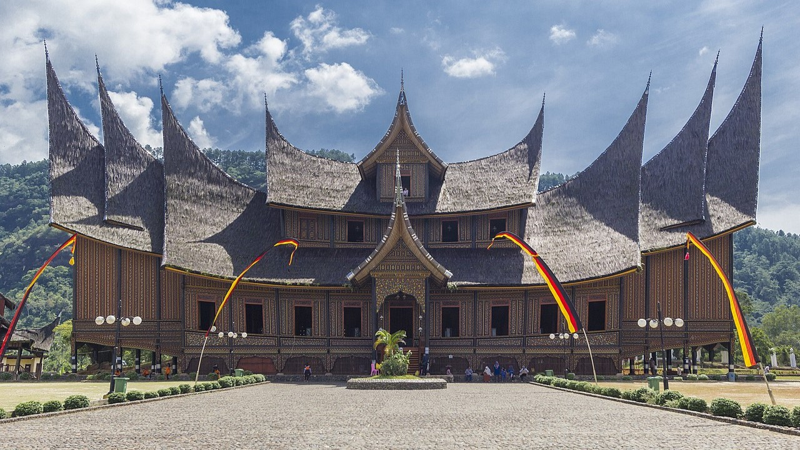

Istano Basa Pagaruyung
Istano Basa Pagaruyung adalah replika istana Minangkabau yang menjadi salah satu ikon budaya.
Jelajahi destinasi budaya dan tempat bersejarah di Minangkabau.
Istano Basa Pagaruyung adalah replika istana Minangkabau yang menjadi salah satu ikon budaya.
Dikenal sebagai desa terindah di dunia, Nagari Pariangan menawarkan keindahan alam dan sejarah.
Danau Singkarak adalah danau terbesar di Sumatera Barat, terkenal dengan keindahan alamnya.

Jam Gadang adalah simbol kebanggaan Minangkabau yang terletak di Bukittinggi dengan sejarah yang kaya.
Puncak Lawang menawarkan panorama indah Danau Maninjau dan pegunungan sekitarnya, tempat yang ideal untuk menikmati alam.
Fort de Kock adalah benteng peninggalan Belanda di Bukittinggi, kini menjadi destinasi wisata sejarah yang menarik.

Masjid Raya Sumatera Barat di Padang adalah contoh arsitektur yang menggabungkan budaya Minangkabau dan Islam.
Air Terjun Lembah Anai, terletak di jalan menuju Bukittinggi, menawarkan pemandangan alam yang menakjubkan dan sejuk.